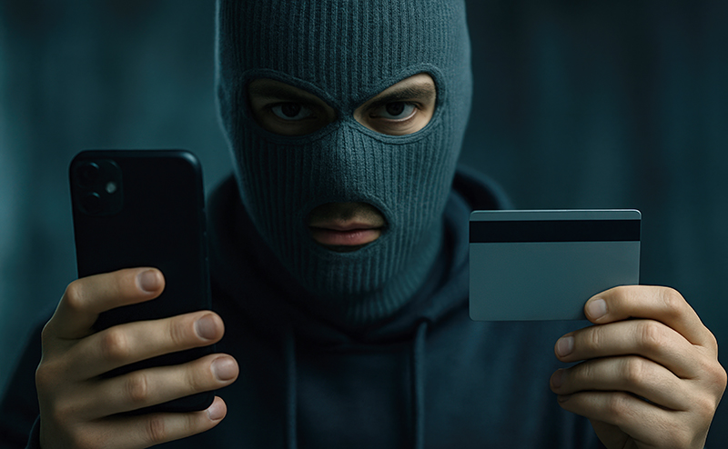
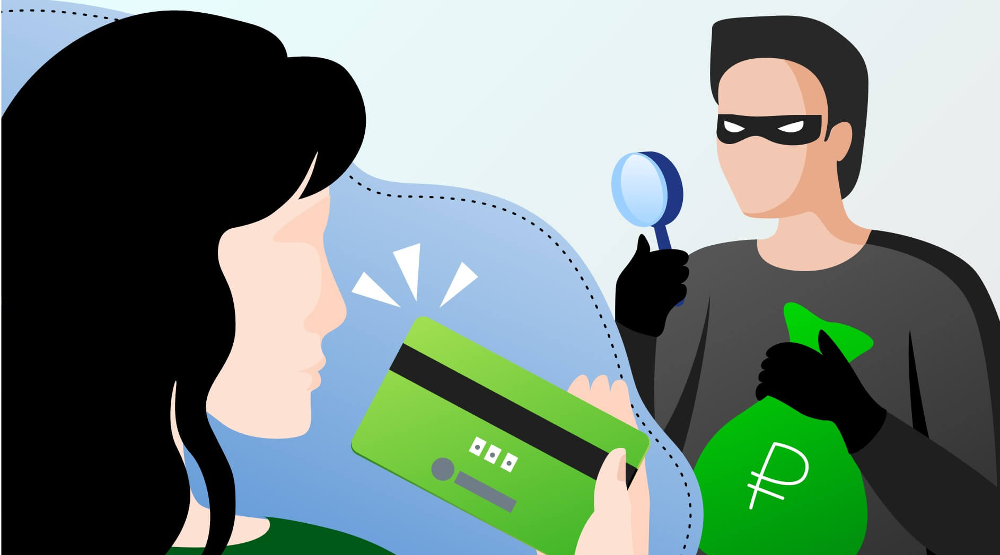
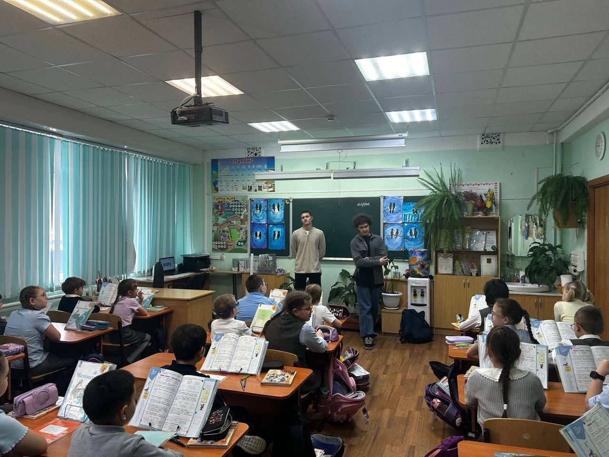

Кто такие мошенники
Мошенничество — это хищение чужого имущества или приобретение права на него путем обмана или злоупотребления доверием (статья 159 Уголовного кодекса РФ). Главная особенность: жертва добровольно передает ценности преступнику, будучи введенной в заблуждение.
По данным МВД России, мошенничество занимает второе место среди всех преступлений в стране, уступая только кражам. Ежегодно тысячи граждан теряют миллиарды рублей из-за действий аферистов. Особенно активны мошенники в сфере IT-технологий: звонки от «службы безопасности банка», поддельные сайты, фальшивые инвестиционные платформы.
Ключевые признаки мошенничества:
- Обман — сообщение ложных сведений, подделка документов или умышленное сокрытие правды.
- Злоупотребление доверием — использование дружеских, родственных или служебных отношений в корыстных целях.
- Добровольность жертвы — владелец имущества сам передает его, считая сделку законной.
Важно помнить: если умысел на завладение чужим имуществом возник после получения вещи, это может квалифицироваться как растрата, а не мошенничество.
↑ НаверхОсновные виды мошенничества
Также распространены мошенничества на сайтах объявлений: просят перейти по ссылке для «оплаты» или прислать код из СМС. Настоящие сотрудники банка и полиции никогда не просят переводить средства на «резервные» счета.
Как защитить себя от мошенников
- Будьте бдительны. Не доверяйте звонкам с незнакомых номеров. Если звонят из «банка» — положите трубку и перезвоните по номеру, указанному на карте.
- Никогда не сообщайте код из СМС, PIN-код, CVV. Сотрудники банка не запрашивают эти данные.
- Не переходите по ссылкам из подозрительных писем и сообщений. Фишинговые сайты выглядят как настоящие, но крадут данные.
- Используйте двухфакторную аутентификацию в соцсетях и почте.
- Проверяйте информацию о благотворительных фондах через официальные реестры.
- Установите приложение банка с уведомлениями и подключите СМС-информирование.
Что делать, если вы стали жертвой мошенников
- Немедленно свяжитесь с банком по горячей линии, заблокируйте карту. Согласно ст. 9 Федерального закона «О национальной платежной системе», банк обязан вернуть средства, если клиент не нарушал правила пользования картой.
- Подайте заявление в полицию — в отделении по месту жительства или по телефону горячей линии МВД: 8-800-222-74-47.
- Сохраните все доказательства: номера телефонов, ссылки, чеки, переписку в мессенджерах.
Дополнительная профилактика: регулярно обновляйте пароли, не храните все деньги на одной карте, используйте виртуальные карты для онлайн-покупок. По данным ЦБ РФ, более 60% мошеннических операций совершаются с использованием методов социальной инженерии.
↑ НаверхМероприятие с общественностью
В рамках проекта по кибербезопасности мы провели открытый урок для школьников и студентов. На занятии разобрали реальные случаи обмана, учились распознавать фишинг и противостоять уловкам аферистов. Ниже — фото, иллюстрирующие типичные портреты мошенников, а также видеофрагмент нашего урока.

Телефонный мошенник
Лже-брокер
Обман с предоплатойНа занятии также обсуждались реальные истории пострадавших: как пенсионерка перевела мошенникам 2 млн рублей, поверив в «дополнительную выплату», и как студент потерял деньги при аренде квартиры. Важно рассказывать о таких схемах близким и пожилым родственникам — они наиболее уязвимы.
↑ НаверхСтатистика и законы
По данным Генпрокуратуры РФ, в 2024 году количество зарегистрированных мошенничеств выросло на 23% по сравнению с предыдущим годом. Самый частый способ — дистанционное мошенничество (звонки, мессенджеры, поддельные сайты). В Уголовном кодексе за мошенничество предусмотрено наказание вплоть до 10 лет лишения свободы (ч. 4 ст. 159 УК РФ — организованная группа либо особо крупный размер).
Также существует статья 159.6 УК РФ — мошенничество в сфере компьютерной информации. Если вас обманули через интернет, всегда фиксируйте все цифровые следы: IP-адреса, номера кошельков, скриншоты.
Помните: мошенники постоянно придумывают новые легенды. Будьте в курсе — читайте предупреждения на сайтах банков и МВД. Никогда не переводите деньги незнакомцам, даже если история звучит очень правдоподобно.
↑ Наверх